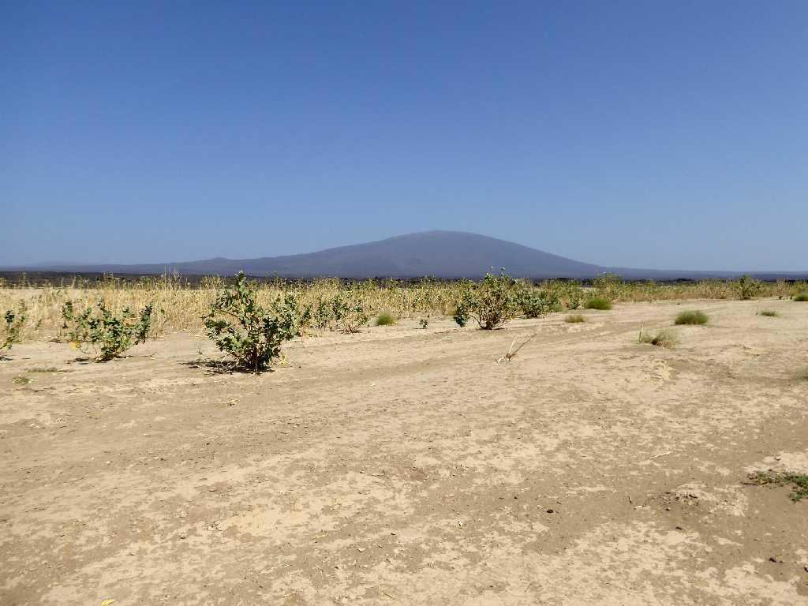
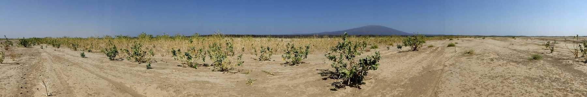
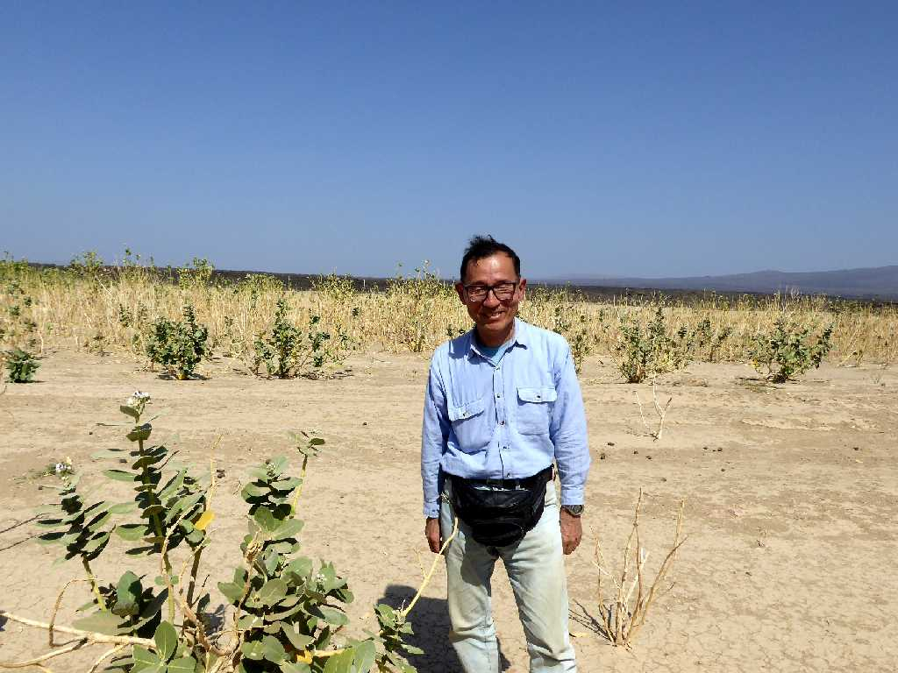
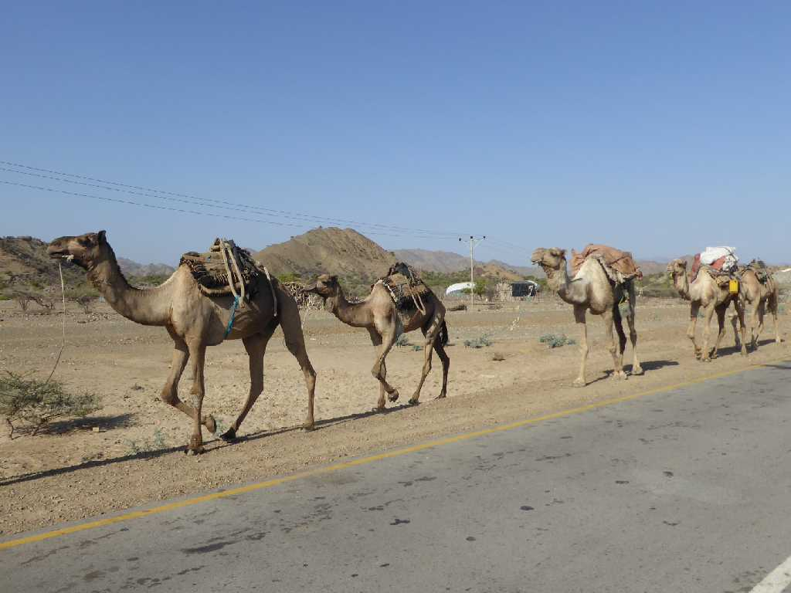
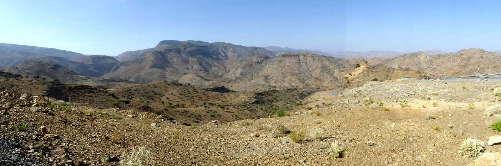
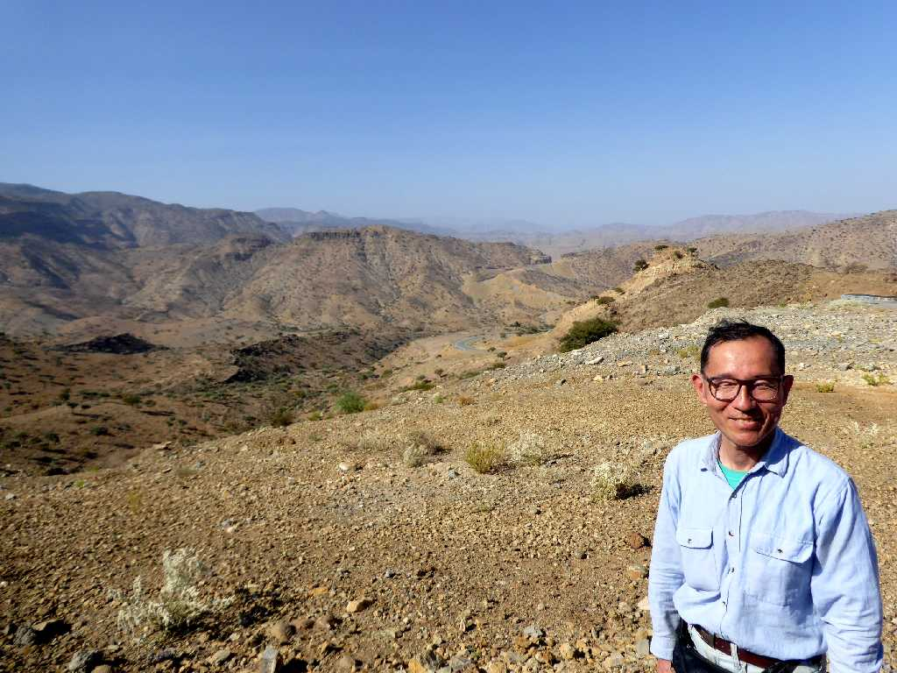

Ale Bagu 1,031m Danakil Desert
アフレラ湖からダナキル砂漠を四輪駆動車で走りエルタアレ火山に向かう

Danakil Desert

January 21 2017 Danakil Desert
砂漠に生息するソドムアップル

Camel Caravan Danakil Desert

Canyon Danakil Desert

January 23 2017 Danakil Desert